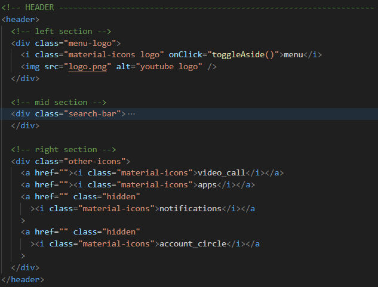
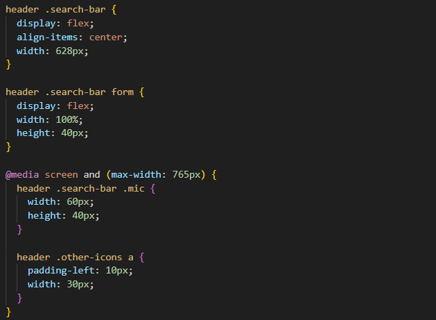
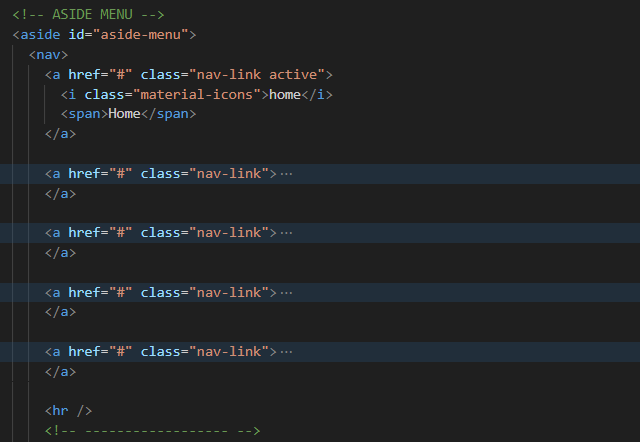
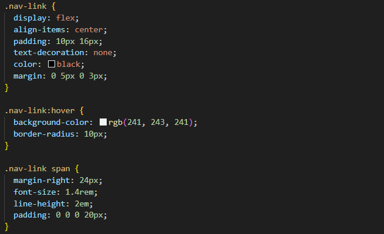
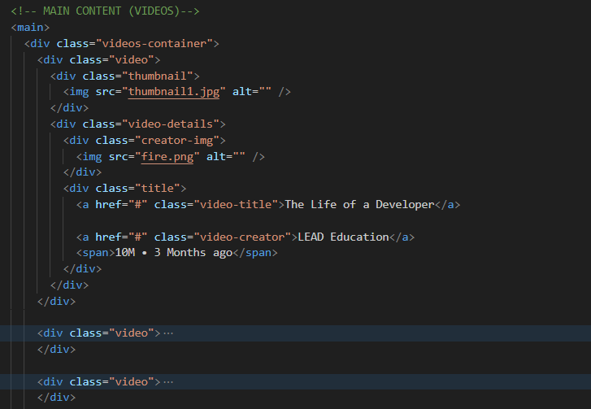
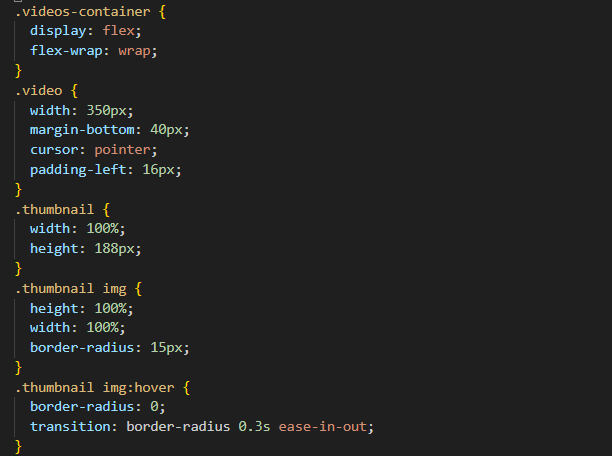

Figma Landing Page Recreation
A deep dive into how each component was built to match the original Figma design.

A deep dive into how each component was built to match the original Figma design.
This project replicates the main layout of YouTube using HTML, CSS, and JavaScript. More specifically, the screenshot below was used an inspiration:

Below are code snippets showcasing key sections of the project. These provide a peek into the implementation of major features rather than the full code structure. Each snippet comes with a brief explanation for those interested in understanding how specific functionalities were built.
This code defines a responsive search bar and header layout using HTML and CSS. The header consists of three sections: a menu logo (left), a search bar (middle), and icons (right). The search bar is structured using flexbox (display: flex; align-items: center; width: 628px), ensuring it remains centered and properly aligned. A media query (max-width: 765px) adjusts the search bar microphone size (width: 60px; height: 40px) and icon spacing (padding-left: 10px; width: 30px) to improve usability on smaller screens. This setup ensures a clean and scalable navigation bar, adapting seamlessly to different screen sizes.


This code defines a sidebar navigation menu using HTML and CSS, allowing users to navigate different sections. The HTML structures the sidebar with an aside element containing multiple navigation links (a with class .nav-link), each accompanied by an icon (i) and a label (span). The CSS styles the links with flexbox (display: flex; align-items: center; padding: 10px 16px) to align text and icons neatly. The links have a hover effect (background-color: rgb(241, 243, 241); border-radius: 10px), making the menu more interactive.


This code defines a video listing section using HTML and CSS, structured to display videos in a grid-like layout. The HTML consists of multiple .video elements, each containing a thumbnail image, title, creator information, and view count. The CSS applies flexbox (display: flex; flex-wrap: wrap;) to arrange videos responsively, ensuring they adapt to different screen sizes. Each thumbnail has a border-radius effect (15px), which smoothly transitions to 0 on hover (transition: border-radius 0.3s ease-in-out). This layout ensures a modern and engaging video browsing experience, similar to popular video platforms.

